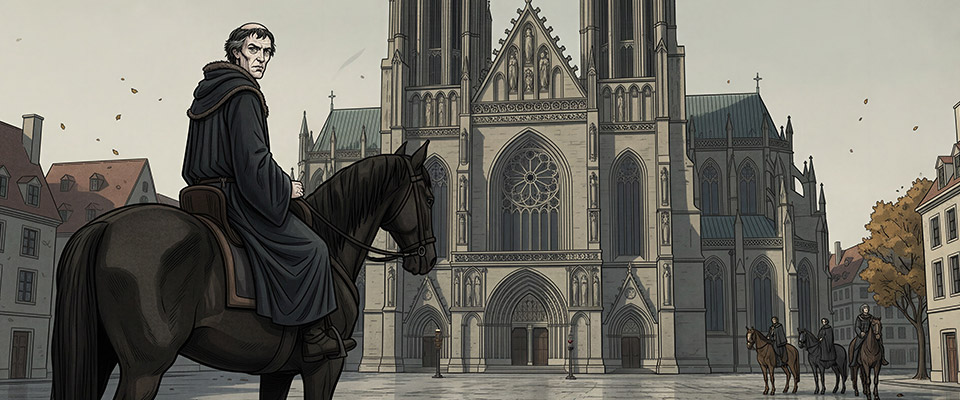
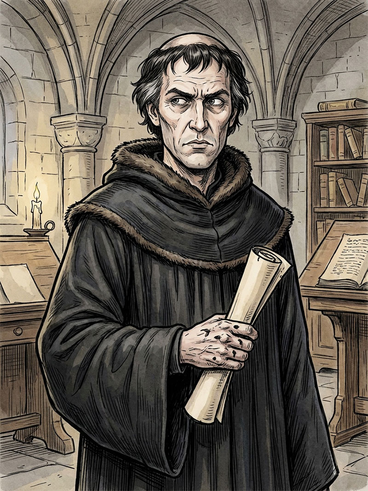

Kapitola 8 · Štěpán Páleč
Kostnice, podzim 1415
Balil jsem pomalu. Nebylo toho mnoho. Teolog cestuje lehce – pergameny, knihy, pár kusů oděvu. Kanovník Erhard mi propůjčil truhlu, tu jsem musel vrátit. Zbytek se vešel do dvou brašen přehozených přes koňský hřbet. Z Čech přicházely zprávy. Protest šlechty – čtyři sta dvapadesát pečetí na osmi pergamenech, adresováno přímo koncilu. Četl jsem ho. Husovo odsouzení nazvali bezprávím a ostudou. Každého kdo tvrdil že v Čechách bují kacířství nazvali lhářem a nepřítelem země. Chybělo málo a jmenovali by mě. Katoličtí kněží byli vyháněni z far. Přijímání podobojí se šířilo. Václav IV. zatím mlčel – udržoval zdání pořádku ale každý kdo znal Čechy věděl že to nevydrží. Já Čechy znal. A věděl jsem že se tam nevrátím. Nebyla to nová myšlenka. Byl jsem vyhoštěn v roce 1412 – ještě před Kostnicí, ještě před vším ostatním. Ale tehdy to byla právní skutečnost bez obsahu. Teď měla obsah. Čechy které jsem znal – pražská univerzita, Betlémská kaple, kolejní síně kde jsme hájili Viklefa – ty Čechy přestávaly existovat. Rodily se jiné, pro které jsem byl zrádce a žalobce. Možná mučedník z druhé strany. Možná jen nepřítel. Jeroným stále seděl ve vězení. Odvolal v září – pod nátlakem, v kostele svatého Pavla, před shromážděním. Souhlasil se smrtí Jana Husa jako spravedlivou. Já věděl – a de Causis věděl – že to nebylo upřímné. Jeroným byl jiný než Jan. Jan by nikdy neodvolal. Jeroným odvolal a pak se styděl za to že odvolal. Proces bude obnoven. Přijdou nové žaloby z Prahy, z Vídně. Bude třeba teologů. De Causis mě bude hledat – v Krakově, dálkově, dopisem. A já budu muset rozhodnout. Zavázal jsem první brašnu. V Kostnici jsem spolupracoval s polským poselstvem od začátku. Mikuláš Trąba, hnězdenský arcibiskup – ten který sloužil mši před Husovou degradací – mi nabídl Krakov. Krakovská univerzita, arcijáhenství v Kališi. Práce, střecha, budoucnost. Cizí budoucnost v cizí zemi ale budoucnost. Polské poselstvo odjíždělo za týden. Šel jsem s nimi. Ráno odjezdu jsem vyšel z domu kanovníka Erharda naposled. Ulice byla prázdná v tu hodinu, jen pár řemeslníků otevíralo krámy. Kostnice jako každé ráno – nestarala se o to co se tu stalo, co tu bylo rozhodnuto, koho tu spálili. Město žilo dál. Přešel jsem přes Münsterské náměstí. Zastavil jsem se. Katedrála stála jako vždy – mohutná, klidná, nepohnutá. Tam uvnitř, před dvěma měsíci, jsem seděl mezi koncilními otci a sledoval degradaci. Papírová koruna. Rozstříhané roucho. A já ji odevzdávám nejmilostivějšímu Pánu Ježíši Kristu. Jan měl odpověď na každou kletbu. Já jsem odpověď na nic neměl. Šel jsem dál. U Rajské brány čekalo polské poselstvo – koně, vozy, lidé v sedlech. Mikuláš Trąba pokynul. Nasedl jsem. Jeli jsme přes bránu a pak po cestě podél Rýna. Řeka tekla klidně, studená, podzimní. Někde tam v té vodě byl Jan. Nebo to co po Janovi zbylo – popel smíchaný s říční vodou, dávno rozptýlený, dávno pryč. Neomlouval jsem se. Nevyčítal jsem si. Věděl jsem co jsem udělal a věděl jsem proč a věděl jsem že tyto dvě věci spolu navždy zůstanou a nikdy se nesmíří. To je vše co mohu říct. Kostnice zmizela za ohybem řeky. Jel jsem do Polska.
Kapitola dokončena